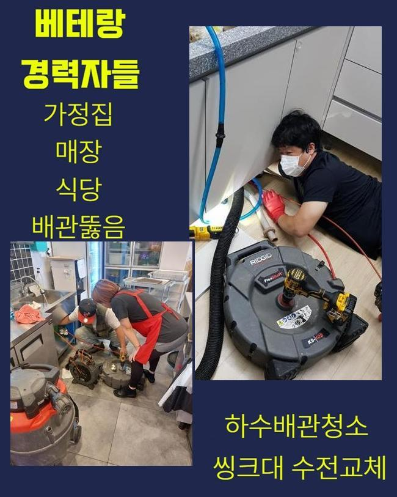
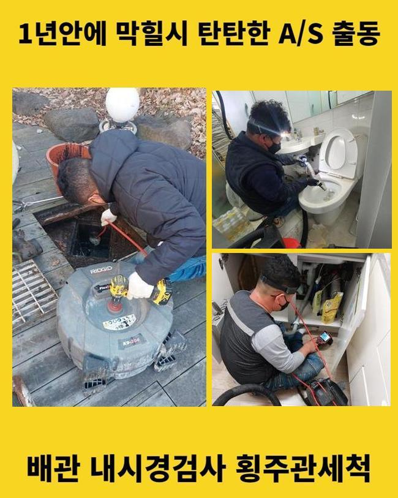
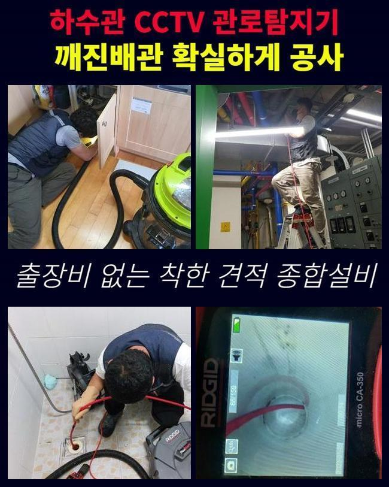
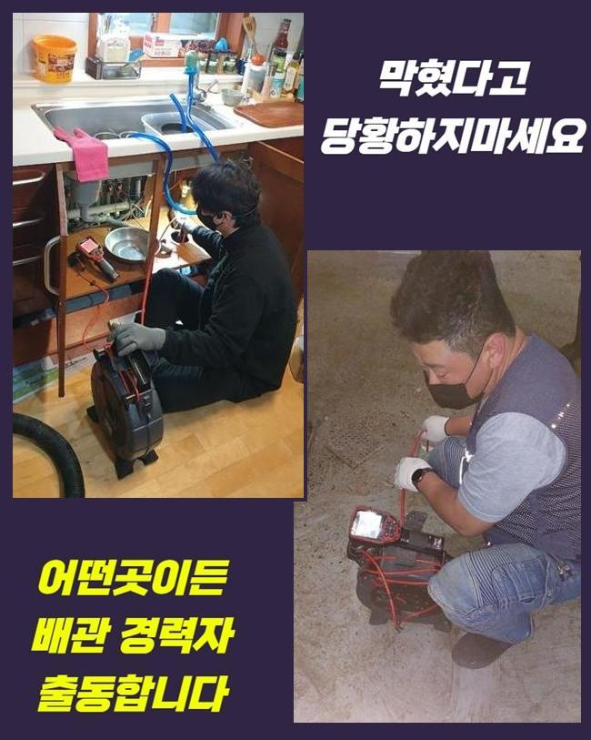
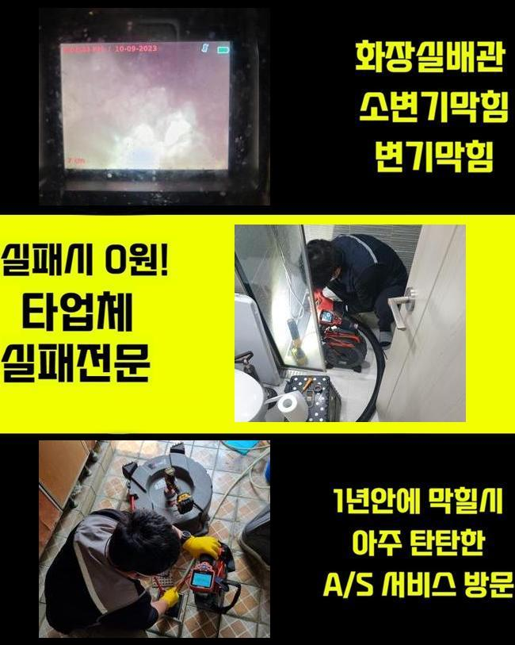

🏠 고양시 내곡동하수구뚫음 원흥동 하수구뚫는곳 설비업체
고양 싱크대막힘 전문 시공 후기

📋 작업 개요
- 위치: 고양
- 서비스 유형: 싱크대막힘, 하수구막힘, 배관막힘, 역류해결, 뚫는업체, 배관청소, 악취차단
- 작업 일시: 2025. 5. 29. 2:34
- 업체명: 하수구수사대 (010-5615-2118)
🔍 문제 상황
고양시 내곡동하수구뚫음 원흥동 하수구뚫는곳 설비업체
배수구의 막힘은 일상을 살다 보면 뒤통수 맞는 기분으로 탄생하는 경우가 아주 많아서 당황할 수 있습니다
알고 있던 지식들을 동원해서 해보더라도 해를 거듭해가면서 점점 더 막혀온 배관은 미동도 하지 않고 도통 해소되지 않아서 어떤 원인이 작용해서 막힘이 시작됐는지 의아한 마음이 날로 증가할 것입니다
통수를 만드는 방법을 알고 싶다면 먼저 적체한 이물질의 크기나 종류에 관하여 파악해야 합니다
배관의 좁은 길목에 이물질이 자리를 차지하면 자기들끼리 결합되면서 더 견고하게 크지 않은 관로를 꽉 막아버리게 되어 큰 문제를 야기해요
배관 상태를 조사하여 적합한 개선 솔루션을 적용해서 역류 증상도 이미 나타난 장소까지도 원만한 하수 처리가 가능하도록 교정해드리고 있습니다
이번 케이스는 아파트 한 싱크대에서 막힘이 나타났음을 접수받고 즉각적으로 현장에 장비를 갖고 향하게 됐어요
말씀하신 부분을 종합해보면 막히기도 했지만 역류 증상까지 덮쳤다년 상태임을 깨닫고 중증 막힘에도 쓰는 장비까지 완벽하게 준비한 뒤에 아직 막혀있을 아파트로 예정된 시간에 찾아갔습니다
다양한 변수와 조건이 청소를 하는 과정에서 발견될 수 있으므로 여러 가능성을 염두에 두고 솔루션이 되어줄 수 있는 여러 수단들을 무조건 가져갑니다

🔎 원인 분석
💡 전문가 진단: 정밀 진단 장비를 사용하여 슬러지의 고착 여부를 판명하고 타격/세척 작업을 실시했습니다.
시공이 필요한 곳에 도착하면 싱크대의 밑에 설치된 주방관과 배수 관로의 상태를 이리저리 둘러봅니다
싱크대막힘은 문제가 되는 배수관이 하부장의 밑에 깔린 채 있도록 설계되어 있어서 하부장을 떼내고 세심하게 진단을 해야 정확한 결론을 얻게 됩니다
주변을 먼저 살펴보니 저 아래의 심연에서부터 주름배관 근방으로 울컥 튀어나왔던 찌꺼기의 잔해가 보였습니다
파이프라인의 한 기점에서 방해물이 자리하면 생활하수의 원활한 배출이 중지되어 버리고 혼탁하게 부패된 하수가 바깥으로 나오면서 비위생적인 환경을 만드는 상황들이 흔히 일어나요
오늘의 시공지도 역류증세가 이미 벌어져 버린 사태라 관로의 속에도 수많은 양의 하수가 쌓여있을거라고 짐작할 수 있었습니다
안에 누적된 하수를 석션으로 끌어올리는 작업을 해줬는데 약간의 물은 위로 올라왔으나 갖가지 침전물은 수습이 되지 않았으며 통수 기능 역시도 이렇다 할 변화가 없었어요
위에서 내려다 봐도 안보이는 한밤중처럼 깜깜한 배수로 곳곳을 볼 수 있는 방안이 있는데요
심연에 이르기까지 확실히 비춰주는 라이트가 달린 내시경이 작업 내도록 활용되므로 배관 컨디션을 쉽게 알 수 있어요
내시경기를 안으로 넣어 밑으로 향하며 위치를 바꾸어 관찰하면 몇 군데의 파트에서 어떤 문제가 있어서 배관이 고장나버렸는지 단서를 알아내게 됩니다
이렇게 얻게된 정보로 비교분석해보면 문제가 생긴 싱크대의 핵심을 잡아내어 바로잡을 수 있습니다

🔧 작업 과정
카메라가 송출하는 화면으로 기다란 관로를 끝까지 검토에 들어가 봤는데 영상 속에서 대부분 봤던 모습은 수세미 조각이나 일부 음식물쓰레기와 기름 슬러지들이 군집되어서 사이즈가 급성장해서 여러 군데의 물 흐름을 완전히 심히 방해하고 있는 모습이더라고요
간혹 이물질이 집합되기 쉬운 곳들에서는 상대적으로 축적된 입자가 많았던 만큼 소량의 물도 이동되지 못할 만큼 비좁아지는 바람에 집중적인 클리닝이 절실한 곳도 섹션도 여기저기에 드러난 상태였습니다
보완을 해야 할 곳을 항목화 해두고 다음으로 샤프트 기기를 활용해서 배관청소 단계를 담당하는 것이 효율적일 것이라는 확신을 결정짓게 되었습니다
이러한 샤프트 장비를 위치시키고 가동하여 맡게 된 싱크대 시설물을 무결점으로 고쳐줄 수 있는 배수로 정비 과정을 착수하게 되었습니다
바닥 근방부터 오염원을 부숴나갔고 석션기로 잔해를 흡수해 없애는 단계를 반복적으로 수행하며 이물질을 싹 걷어내는 분쇄와 흡수 단계를 오랜기간 반복작업 했습니다
꽉 봉쇄된 쪽은 좀 더 집중하여 잔여물이 없는 청소가 실현될 수 있도록 더 주의를 기울였어요
이러한 노력 끝에 윗부분부터 더 아래의 구간까지 전부 뚫어주고나면 다시 속으로 카메라를 넣어서 청소가 잘 되었는지 실시간으로 살피면서 진단을 해주고 있습니다
이 과정을 통과하며 전반적인 배관 라인들을 검토한 다음엔 성능을 확인할 수 있는 손쉽고 간단한 방법인 물 배수검사를 해보면서 물이 잘 이동하나 봅니다
문제가 극복됐는지 확신을 가지고자 한다면 수돗물을 모아서 단번에 쏟아붓고 관찰을 해주는 이러한 통수 진단이 신속 정확하다고 전해드릴 수 있습니다
다량의 수돗물을 폐수를 시켜보고 이동성이 충분한지 살펴본다면 지난 배관 정리 작업이 기대에 부합하는지 추측해볼 수 있게 됩니다
세심한 배관 클리닝이 촘촘하게 수행되어 다량 부어봤던 물도 예전과는 180도 다르게 활기차게 내려가는 게 보였으며 물 내림 이후의 모습을 고객분께도 바로바로 확실히 알려드렸습니다
쾌적한 흐름을 복구시키는 정화작업은 끝났고 파편이 돼서 나온 침전물만 걸러서 폐기하면 이번 싱크대 현장도 성과를 낼 수 있을 듯 했어요
저 아랫부분으로부터 걷어올린 찌꺼기들은 석션기의 집수통 속에 집결이 되는데요
석션통을 연 뒤에 얼마나 모였는지를 본다면 어떤 속성의 이물질이 물길을 마비시킨 것인지 세부적으로 알 수 있어요
청소를 해준 이후에 빼곡하게 차있었던 물질은 계란 껍데기 등으로 보이는 모양이더라고요


✅ 작업 완료
물에 아무리 오래 있어도 해체가 되지 않는건 다들 아실텐데 거기다가 내부로 빠져버린 분량이 엄청 많다보니 좁은 관로 안에서 트러블을 야기한 듯 보였습니다
낱개로 봤을 때는 미세한 파편일지라도 계속 축적된다면 꺾인 구간 등에서 물이 못 빠져나가는 증세를 야기할 수 있으므로 수돗물을 사용할 시 지속적으로 주의를 지키려 하는 것이 무엇보다 필요합니다
싱크대에 물이 계속 고이면 환경도 더러워지며 두통을 유발하는 악취까지 피어오를 수 있는데다가 재막힘같은 불리한 상황도 조만간 직면하게 될 것입니다
조기에 저희를 찾아주셔야 다른 하수구의 트러블을 차단할 수 있다는 사실을 마음에 새겨두시고 오류가 나면 접수를 해주시면 됩니다!



⚠️ 주방 싱크대 배관 막힘 예방 수칙
- ✅ 기름기가 묻은 식기나 프라이팬은 설거지 전 키친타올로 반드시 기름때를 닦아내세요.
- ✅ 주기적으로 싱크대 개수대에 뜨거운 물을 가득 받아 한 번에 내려 배관 내부 기름을 씻어내세요.
- ✅ 배수구 거름망을 미세한 필터로 사용하시고 음식물 찌꺼기가 틈으로 새어 들지 않게 관리하세요.
- ✅ 베이킹소다와 식초를 뜨거운 물과 함께 일주일에 한 번씩 부어주면 배관 살균과 막힘 예방에 좋습니다.
💡 핵심 정리
- 확실한 장비 작업(내시경 점검 및 샤프트 스케일링)으로 원인을 뿌리 뽑습니다.
- 작업 후 1년 이내에 동일한 부위 재발 시 100% 무상 A/S 서비스를 보장합니다.
- 서울 · 경기 · 인천 전 지역에 24시간 언제든 긴급 출동할 수 있도록 항시 대기 중입니다.
❓ 자주 묻는 질문 (FAQ)
🚨 고양 싱크대막힘 문제로 고민이신가요?
정확한 원인 진단과 확실한 시공으로 재발 없는 해결을 약속드립니다.
24시간 긴급 출동 | 서울 · 경기 · 인천 전지역 | 1년 내 재발 시 무상 A/S